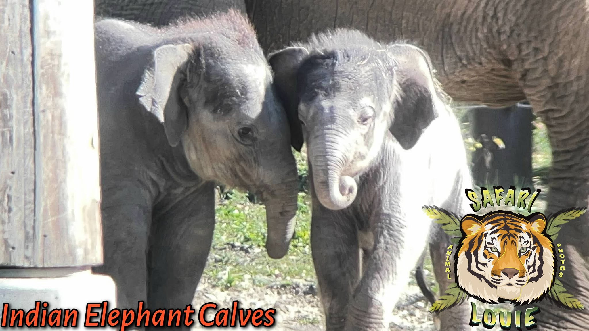

2025: A Year That Was Wild
Year in Review · Five AZA Zoos & Beyond

2025, A Year that was ( once again ) wild & as usual, it’s time for this years breakdown, This Year my Safari Crew & I have traveled to 5 AZA Zoological Facilities, Not a lot of trips this year but it was still amazing,
We stayed in Columbus to see some of newest & cutest residences like Rita & Ollie the Baby Elephants & the Opening of North America Trek ( Phase 1 ) which it’s really becoming one of my favorite areas in Columbus,
In Cincinnati, things are very similar though we just heard that their new Black Bear & Sea Otter enclosures is completed & we will be returning in the Spring but on our last visit we saw the New & Very Impressive Elephant Trek which has to be my favorite Asian Elephant Complex,
Though this isn’t a zoo but seeing Native Wildlife is a wonderful sight to see especially the Birds & Reptiles we saw in St.Augustine Florida & On The Islands of the Caribbean,
Though this trip wasn’t on my schedule for this year but I couldn’t say no to this one, My friend/coworker wanted to cross off the Akron Zoo off her list, so she invited me to journey with her & luckily we succeeded especially getting pictures of Sumi the Sumatran Tiger,
My Zoo buddy & I made the journey to Cumberland Ohio to do an open air Safari at The Wilds & see some rare of Hoof stock & carnivores & lastly my folks and I went to Royal Oak In Detroit to do the Detroit Zoo which has the one of the friendliest zoo visits I experience and for sure we will be making a return especially now that we just got word that Detroit had Lion Cubs,
also this year even though I did not visit but my stepdad went to the Blank Park Zoo and photography animals for me which I’m very thankful for & with their recent expansion of their big cat facilities I’m sure one of these days I will make a visit there.
This year was a success for the crew especially with the help of the new photo tours which yes we are still planning to do more once we get more photographs of the animals in each area we come across, we already been discussing plans for 2026 and once again it is gonna be wild so happy new year everyone and we look forward for the adventures in 2026!!
Louie posted this on Facebook — open the original post →